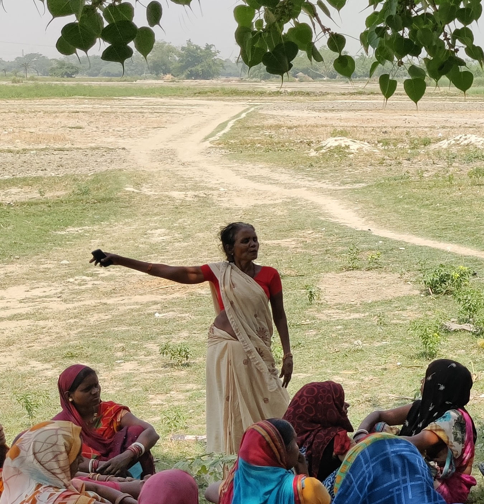
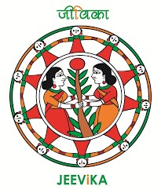
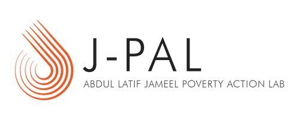

GRAMA (Governance Research and Accountability for Meaningful Advancement) is a research and policy initiative working to strengthen the accountability of public institutions by centering the perspectives of those they are meant to serve: last-mile citizens, frontline workers who connect them to the state, and local elected officials who represent them.
Across India's governance landscape, decisions flow downward — through administrative hierarchies, programme guidelines, and data systems designed for upward reporting. The people at the receiving end of policy — rural citizens navigating public programmes, and local government officials tasked with delivering them — rarely shape the information, feedback, or evidence that drives reform.
GRAMA exists to change this. We believe that effective governance requires not just better data or better research, but a fundamental reorientation: building systems that listen to those at the bottom, and institutions that learn from what they hear.
We envision governance that is shaped by those closest to it — where research, data, and advocacy come together to ensure that the voices of those furthest from power are not just heard, but acted upon.
The state is distant from the citizens it serves. Closing that distance means changing the information that reaches policymakers, and the information through which the state itself perceives citizens. We work on both.
Through research, we study how local governance actually functions and bring that evidence to policymakers, advocates, and citizens. Through partnerships with government, we work to reshape administrative data systems, the primary way the state sees citizens, so they carry local knowledge and citizen experience more faithfully.
We conduct rigorous, field-grounded research on how local governance functions in practice. Our work studies management practices, decision-making, collective action, and the role of voice within rural institutions using both quantitative and qualitative methods. We examine how citizens engage with administrative systems, how information moves through institutions, and why similar policies produce different outcomes across contexts. Our aim is to generate evidence that helps governments and communities build more responsive and effective forms of local governance.
We partner with large public programmes to reshape the administrative systems, feedback processes, and organisational learning through which they perceive communities, identify problems, and direct attention. Our focus is on building systems that carry local knowledge and citizen experience into institutional decision-making, and that support frontline workers in implementation. Our current work in Bihar, with JEEViKA, Rural Development Department, Government of Bihar, is one example: we are collaborating with one of India’s largest rural livelihoods programmes to prototype beneficiary feedback mechanisms within programme data architecture and to design evidence-based peer learning systems for last-mile cadre.

